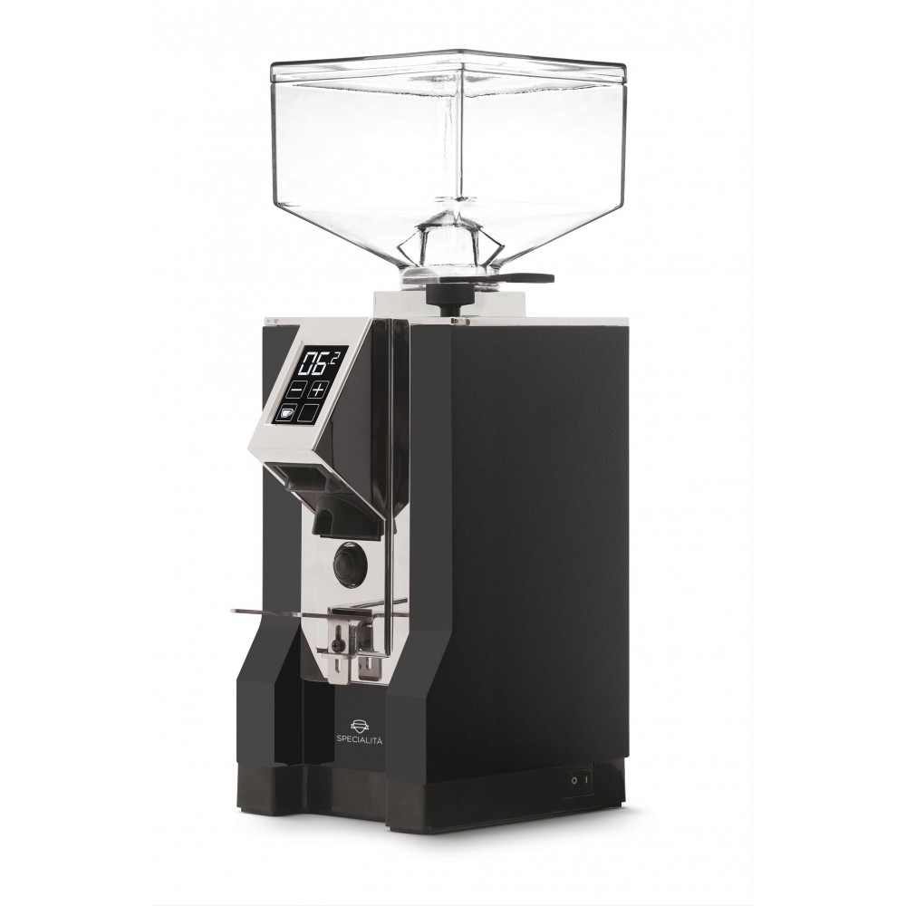
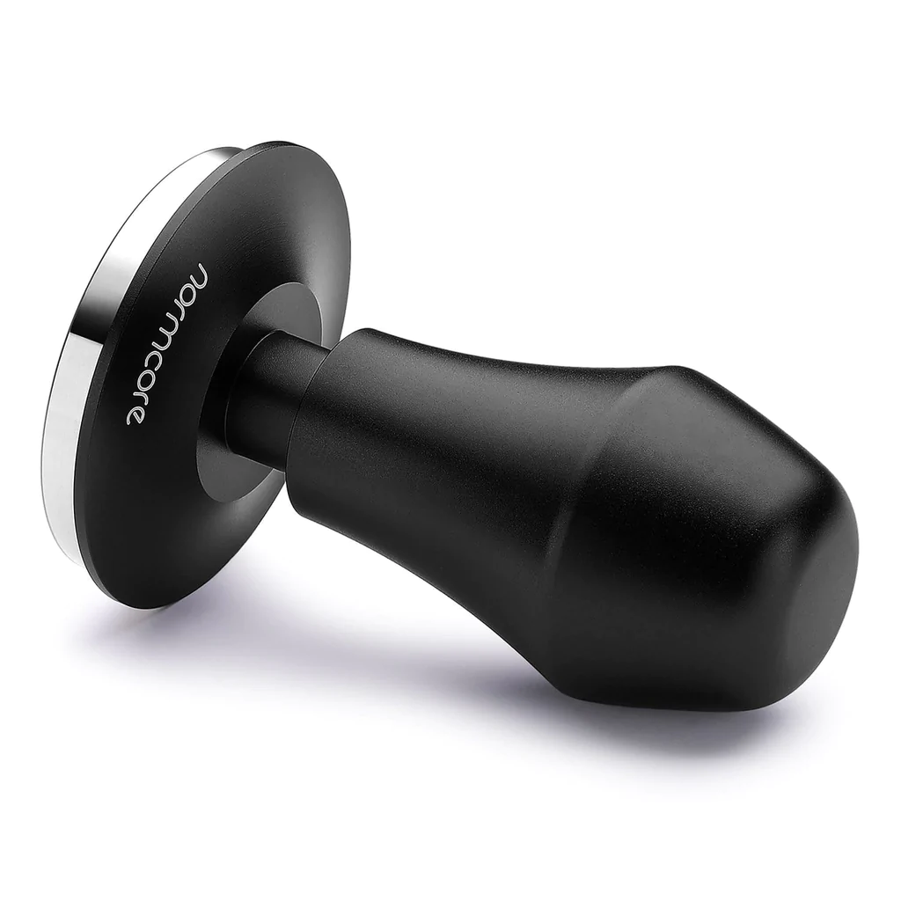
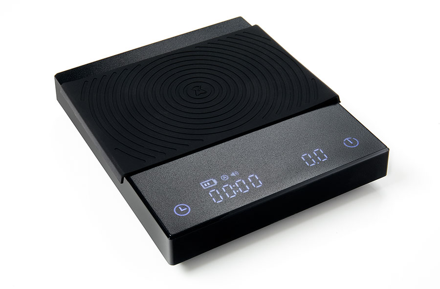

Tools you will need:
- espresso machine
- espresso grinder 
- tamper 
- scale 
- patience (optional)


Steps to make espresso:
- weigh ~18 grams of coffee beans → (why weigh?)
- grind finely → (watch this for more detail)
- distribute ground coffee evenly in filter basket→ (watch this for more detail)
- pull shot
- taste, adjust parameters for your next shot!→ (troubleshooting guide)
- go watch videos of people doing it better
- get self conscious about your lack of ability
- sell espresso machine